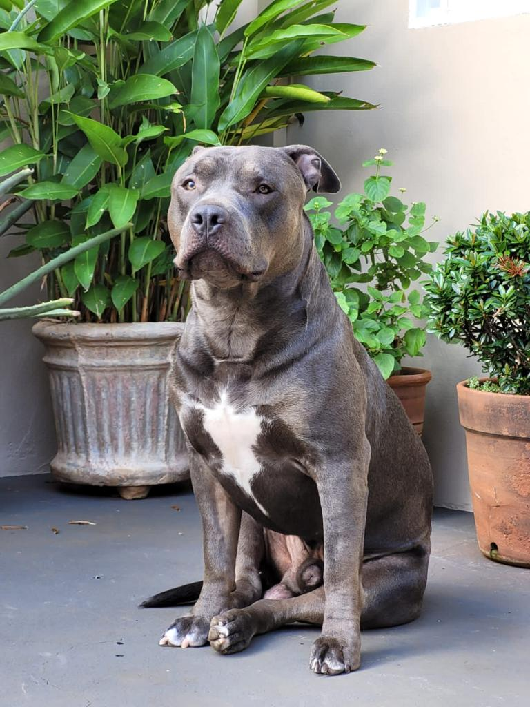

|  | Sobre
Um cãozinho de estrutura compacta e forte, o American Bully é uma raça amorosa e protetora.
|
|---|
História |
Curiosidades |
|---|---|
O American Bully é uma raça de cães criada por volta de 1990 nos Estados Unidos
|
- Existem variações de tamanho da raça: XL, XXL, standard e pocket
|